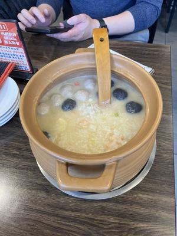
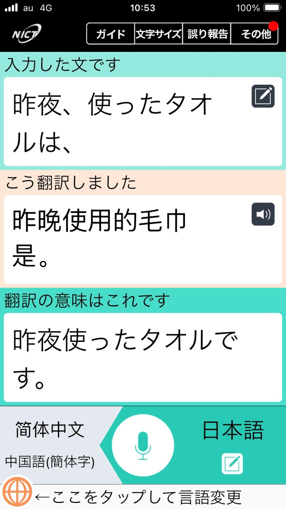
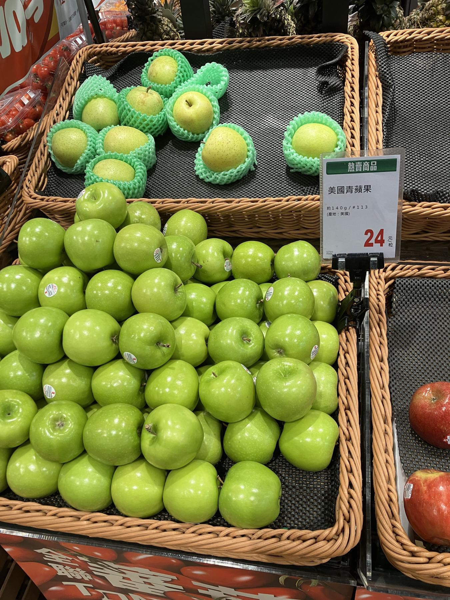
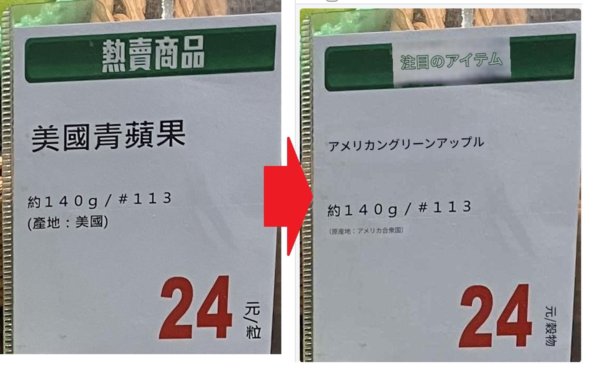
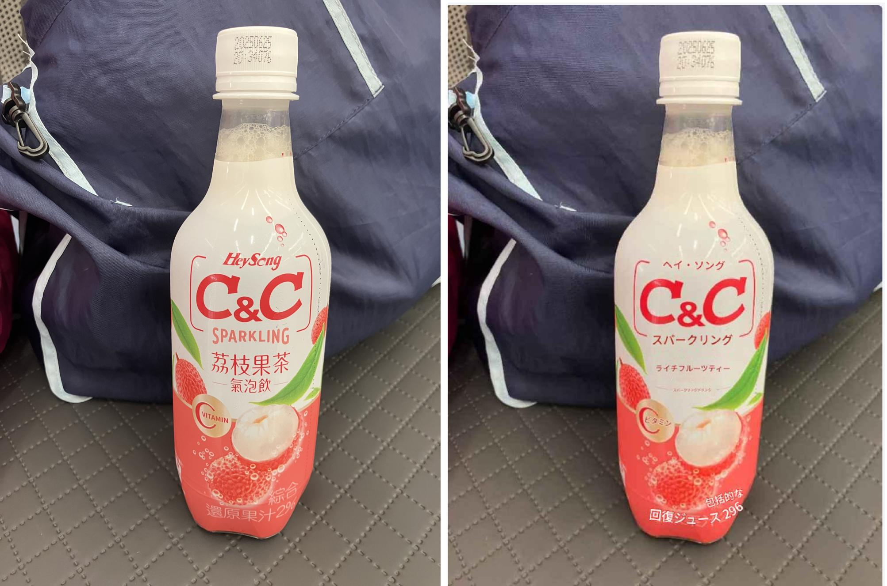
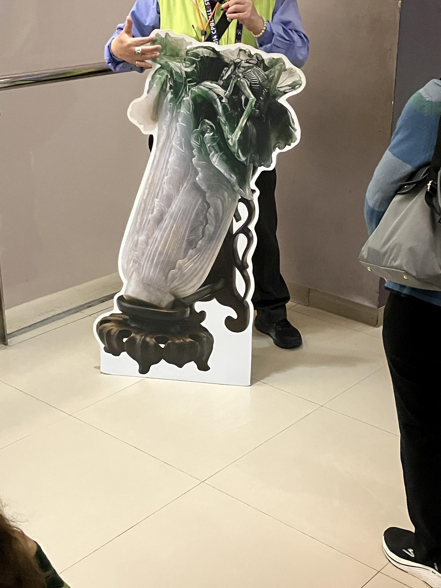

うるがいの話 ある日
最新: 観光３日目【うるがいの話 ある日】とは 一日だけのプログです
『うるがいの話』の最新一日だけのプログで、通信料が少なく経済的だ。カニの画像をクリックすると全ての日付が載る『うるがいの話』サイトを表示します
|
|
【うるがいの話】 うるがい(ｳﾙｶﾞｲ urugai)とは、『もずくがに』の名前でとても大きくなります。 |
|---|---|
|
|
【カミマヤーの話】 猫のことを方言でマヤーといいます。カミマヤー（kamimayaa）とは、神の猫のことです。 |
|
【たながぁの音楽】 たながぁ（ﾀﾅｶﾞｰ tanagaa）とは手長えびのことで、何種類かあり大きいのは車 エビぐらいになります。 |

|
【ぶながぁの話】 ぶながぁ(ﾌﾞﾅｶﾞｰ bunagaa)とは、赤い髪の毛、赤い身体、そして身長は１ｍ２０ｃｍ ぐらい、川の蟹を食べているの目撃された。場所は沖縄県国頭郡大宜味村のと ある村僕の隣近所に住んでいる爺さんから、聞いた話です。 |
|
|
【ギーマの話】 ギーマ(giima)とは、山原の里山に咲くスズランに似た、 花を付けます。実は食べられます、 気が付くと口の周りが紫になっています。 |
2025年04月10日 (木）観光３日目
15:35
３日目は、オプションが選択できるが利用せず。台湾にいる子供と
友達に会う。ちなみにオプションは、二日目とおなじく遠いところ
９千円、９人（ツアー客、全員で３１名）が利用
基隆中正公園 港町が見渡せる公園
野柳地質公園 海岸の地層を見学
11:32 お粥のお店 LiuBiJu アワビとかホタテも

友達が、３千元以上の食事をおごってくれた。食べないわけにはい
かない。こんなお粥食べた事ない（ネットでも書いていた）。その
後、コヒー店に入り、ホテルの近くにある百貨店へいく。ツアーの
メンバーの沢山見かけた。最後にスパーで、お菓子をみる。空港へ
の集合時間３０分前には、子供達とは解散する。オプションに参加
した人たちもバスでホテルに帰ってきた。
１５：３０空港へ出発、４０分ほど・・・、まさかと思ったがバス
に酔う。気分は最低、荷物を預ける。すると、『モバイルバッテリ
ー、と、イヤホンをホテルに忘れている人』と添乗員の女性の門さ
んが、叫ぶ。首里石嶺（６２歳）の男性５名の一人が、応じた。バ
ッテリーは、難しいがイヤホンはホテルから、送ってもらうことに
なった。（私もモバイルバッテリーを今回初めて利用した、充電器
の電源は普通に使えたが）。トイレタイムが、取られた。すぐさま
トイレへ、戻す（おお、なんてことだ）。
帰りの出国手続きも、大勢の人で混雑していた。自動化が進んだゲ
ートで、パスポートと顔認証を済ませてなんなく終了。ピーチの出
発口へ移動、出発するまで１時間ほど自由時間である。自動販売機
があった、子供が時折飲んでいたレイシのジュースがあった。３５
元、ヨメが、悠遊カード（プリペイド式電子マネー）を使うか上手
くいかない、５０元硬貨を使うがそれでもダメ、しばらくすると添
乗員の門さんが、悠遊カードと硬貨で挑戦するがダメ、すると近く
にいた台湾人の青年が、試してくれた。が、だめ、門さんが、自分
のお金で３５元投入すると、上手くいった。台湾の青年に『謝謝』
とお礼を言う。
ピーチは、機材の調整のため４０分遅れる。私の隣に座っていた姉
妹（介護保険を払っていた、同世代か）に、子供が那覇に帰ってき
たとき、飛行機が翌日の２時になりましたよと話す。え！となった
が、暇なので乗り遅れた飛行機などの話などで時間を潰す。彼女達
は、３日目のオプションを利用、バスの運転は最悪でしたと話して
いた。飛行機は、３０分遅れで出発、飛行機は全然ゆれず単行本も
読んだ。
帰りは１時間の飛行である、あっという間だった。パスポートと日
本の入国カード（係は取るだけ）を手渡し、手荷物を取るだけ。荷
物を待っている間、４名姉妹のうち、高級おばさん（全体金持ち）
に『ヤンバルへ帰るの』といわれ、識名御苑ですよ、または識名霊
園、ナイトクラブ（台湾ではお墓があるところと添乗員）があると
こへ帰りますと答える。
ツアーは、ほとんどが沖縄に人たちだが、食事のテーブルで隣に座
った男性の人が、訛りがないので尋ねると東京から、２年前に沖縄
に移住しました、息子が沖縄の人を嫁にして孫もいると、ホー、歳
は一緒だった（ランタンを、一緒にあげた夫婦）。
誰とでも、直ぐに話すのでヨメには、フレンドリー過ぎるので注意
された。ま、一生会えないでしょうが、手荷物を取って解散した。
旅行にあたって子供から、音声翻訳とグーグルレンズを勧められた
１．外国語に翻訳してくれる音声翻訳アプリ(VoiceTra)

ホテルの部屋は、最新だが部屋への説明がない。使ったバスタオル
を取り替えてくれるのか、気になったのでフロントで実践してみた
・・・するとフロントの若い女性は・・・、彼女も翻訳アプリを使
い日本語を見せてくれた。が、意味が分からず諦めた。
２．画像の台湾語に翻訳するためGoogle レンズ
スマホがアイホンなので「Google」アプリをインストールした。
利用したのは、一度だけ。棘があるハナキリン（花麒麟）の名前を
調べたのに利用しただけ。
下は、スパーで見つけた３日目の朝食に目にした果物が、何かとパ
ソコンで字を翻訳してみた、なるほど


苦労して買ったレイシ（ライチ）のジュース

生産地は、台湾のどこかと思ってが・・・なるほど、便利である。
台湾の車は、運転が荒いと添乗員后さんが言っていたが、ほんとに
あらい。ツアーのアンケートに、バス酔いする人もいるので、乗り
物酔いの薬を準備してくるように、と案内して欲しいと書いた。
残念だったのは、故宮博物院の翠玉白菜（すいぎょくはくさい）が
パリに貸し出していたこと。でかい看板で、添乗員后さんが説明。

いやー、最高でした。次、行きますかと聞かれると『行きません、
ツアーは』と答えるでしょう。でもね、台湾へはいくかも、そのと
きは、電車のれるのでしょうか？、３日目、ホテルの近くの駅から
二駅ほどの、とある所へ出かけたが電車に乗れず、諦めた夫婦がい
た（男性は、絶対カツラと睨んでいるが）。
台湾到着後バスツアーのバスの中で、添乗員后さんに１万円分を両
替した。私達は一回だけ、でも他の人達は何度か追加で添乗員さん
と両替をし、沢山買い物をしていた。うちは、コドモとお隣さんに
あげる２か所分だけだったので、残金あり。
バス酔いは、昨日まで引っ張っていて、朝とうとう耳鼻科からもら
った薬を飲んだ。恐るべし、バス酔い。体重は今も減ったまま。